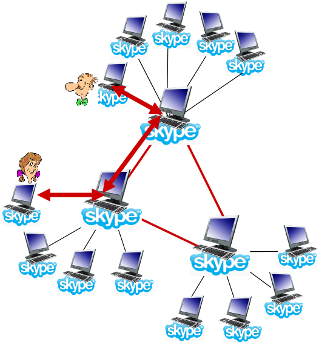

Multimedia Networking II
Multimedia Networking
UDP
- Servidor envia a uma taxa apropriada para o cliente;
- geralmente, a taxa de envio é igual à taxa de encoding, à taxa constante e à taxa de consumo;
- a taxa de transmissão pode não querer saber de níveis de congestão.
- Tem um pequeno playout delay (1 a 2 segundos) para remover o jitter da rede;
- Recuperação de erros: ao nível da aplicação.
- Inconvenientes:
- Precisa de um controlo adicional;
- O ajuste da qualidade do vídeo, ou seja, a adaptação do débito, terá de ser feito pela aplicação em si;
- Pode não conseguir passar firewalls (certas middleboxes podem bloquear o tráfego UDP, visto este não dar qualquer garantia)
- É mais difícil de desenvolver para aplicações em larga escala;
HTTP
- Corre sobre TCP;
- Terá todos os mecanismos de controlo de congestão e fluxo do TCP.
- Obtém o conteúdo através de pedidos
HTTP GET; - Envia à taxa possível máxima em TCP;
- A taxa de enchimento irá flutuar devido aos mecanismos de controlo de congestão do TCP e às suas retransmissões;
- Se a taxa de consumo for menos que a taxa de receção:
- providencia uma entrega TCP smooth.
- Se a taxa de consumo for maior:
- o buffer será "drenado" e o vídeo irá entrar em freeze.

- De notar que quando o cliente remover f bits, irá criar espaço para novos f bits no buffer da aplicação do cliente, o que permitirá que o servidor envie f bits adicionais;
- A taxa de envio do servidor não poderá ser maior que a taxa de consumo no cliente. Assim, o comportamento do cliente poderá condicionar o envio de dados por parte do servidor;
- O DASH assume um comportamento semelhante ao HTTP, no entanto, é adaptativo.
- Vantagens:
- Não precisa de um media control server;
- Permite o vídeo termination e repositioning;
- Não tem problemas com firewalls;
- Melhor para desenvolvimento em larga escala.
Voice-over-IP (VoIP)
- Particularmente sensível a variações de atrasos e menos sensível a perdas;
- O principal requisito é a necessidade de manter o aspeto conversacional;
- Grandes delays são fáceis de notar;
- pings menores a 150 msec são bons;
- pings maiores que 300 msec são maus;
- Inclui o nível da aplicação;
- Trabalha com base nos talk spurt (períodos de fala);
- Ou seja, o tráfego é enviado a cada \( 20ms \),
- Adiciona um cabeçalho da camada de aplicação a cada chunk;
- Encapsula o chunk e o cabeçalho em UDP (ou segmentos TCP);
- A aplicação irá enviar segumentos para o socket a cada \( 20ms \) durante o talk spurt.
Packet Loss e Delay
- Faz recall, por default: o IP providencia um serviço de melhor esforço;
- Network loss: datagrama IP perdida devido à congestão da rede (buffer do router deu overflow);
- Delay loss: datagrama IP chega demasiado tarde para o playout do recetor:
- delays: a processar, em queue na rede, delays no end-system (emissor, recetor);
- delay máximo tolerável, tipicamente: \( 300ms \);
- um packet atrasado é um packet perdido.
- Tolerância a perdas: depende do encoding de voz e da ocultação de perdas. Para perda de packets a taxa entre 1% e 10% pode ser tolerada.
Delay Jitter
Os delays end-to-end para dois packets consecutivos: a diferença pode ser mais ou menos que \( 20ms \) (diferença do tempo de transmissão).

Delay de playout fixo
- Quando iniciar o playout?
- Recetor tenta dar playout de cada chunk exatamente \( q\ ms \) após o chunk ser gerado;
- o chunk tem timestamp \( t \): playout do chunk em \( t+q \);
- chunk chega depois de \( t+q \): dados que chegam tarde para o playout são considerados dados perdidos.
- Trade-off ao escolher o valor de \( q \):
- valor alto de \( q \): perdem-se menos packets;
- valor baixo de \( q \): melhor experiência interativa.
- Recetor tenta dar playout de cada chunk exatamente \( q\ ms \) após o chunk ser gerado;
- O emissor irá enviar pacotes a cada \( 20ms \) durante o talk spurt.
- O primeiro packet irá chegar no tempo \( r \);
- O primeiro playout iniciará a \( p \);
- O segundo playout iniciará a \( p' \).

Delay de playout adaptativo
- Objetivo: ter um baixo delay de playout e baixa taxa de perda;
- Abordagem: ajuste adaptativo do delay de playout:
- Estimar o delay da rede, ajustar o delay de playout no início de cada talk spurt;
- Períodos silenciosos são comprimidos e alongados;
- Chunks continuam a ser reproduzidos a cada \( 20ms \) durante o talk spurt.
- Adaptativamente, estima o delay do packet: (EWMA: exponentially weighted moving average, estimativa para o recall TCP RTT):
\[ d_i = (1 - \alpha)d_{i - 1} + \alpha(r_i - t_i) \]
-
Onde:
- \( d_i \): representa o delay estimado após o pacote \( i \);
- \( \alpha \): pequena constante, por exemplo, \( 0.1 \);
- \( r_i \): tempo recebido;
- \( t_i \): tempo enviado (timestamp);
- \( (r_i - t_i) \): delay medido para o pacote \( i \).
-
Também é útil para estimar a média do desvio do delay, \( v_i \):
\[ v_i = (1 - \beta)v_{i-1} + \beta|r_i - t_i - d_i| \]
- Estima \( d_i \), calcula \( v_i \) a cada packet recebido, mas apenas é utilizado no início do talk spurt;
- Para o primeiro packet no talk spurt, o playout time é_
\[ playout\ time_i = t_i + d_i + Kv_i \]
- Os restantes packets no talk spurt são reproduzidos de forma periódica.
- Como é que um recetor determina se um packet é o primeiro num talk spurt?
- se não existirem perdas, o recetor olha para as timestamps consecutivas;
- se a diferença entre timestamps consecutivas for superior a \( 20ms \), indica que o talk spurt iniciou.
- com possíveis perdas, o recetor deve olhar para as timestamps e para os números de sequência.
- se a diferença entre timestamps consecutivas for superior a \( 20ms \) e o número de sequência não tem falhas, indica que o talk spurt iniciou.
- se não existirem perdas, o recetor olha para as timestamps consecutivas;
Recuperar de uma perda de um packet
- Desafio: recuperar da perda do pacote dando um pequeno delay tolerável entre a transmissão original e o playout.
- Cada ACK/NAK demora cerca de um RTT;
- Alternativa: Forward Error Correction (FEC).
- Envia bits suficientes para permitir uma recuperação sem retransmissão.
- FEC Simples:
- Para cada grupo de \( n \) chunks, cria um chunk redundante para utilizar
OR-exclusivos comnchunks originais; - Envia \( n + 1 \) chunks, aumentando a largura de banda por um fator \( \frac{1}{n} \);
- Pode reconstruir \( n \) chunks originais se perder nmo máximo um chunk dos \( n+1 \) chunks com o delay de playout.
- Para cada grupo de \( n \) chunks, cria um chunk redundante para utilizar
- Outro esquema FEC:
- "piggyback lower quality stream";
- Envia streams de áudio em baixa resolução como informação redundante;
- Perdas não consecutivas: recetor pode esconder a perda;
- Generalização: também pode dar append do (\( n-1 \))º e (\( n-2 \))º menor bit da taxa de chunk.

- Interleaving para esconder a perda:
- Chunks de áudio são divididos em unidades mais pequenas;
- Packets contêm pequenas unidades de diferentes chunks;
- Se um packet é perdido, continuar-se-á a ter grande parte do chunk original;
- Não tem overhead de redundância, mas aumenta a latência e o delay de playout.
Skype
- Tem uma protocolo de camada aplicacional proprietário que foi inferido através de reverse engineering;
- Mensagens encriptadas.
- Componentes:
- Clientes: Peers do Skype conectam-se diretamente uns aos outros através de chamadas VoIP;
- Super-Nodos (SN): Peers do Skype com funções especiais;
- Rede de Overlay: Entre os SNs para localizar os SCs;
- Login Server.

- Operação do Cliente:
- Junta-se à rede do Skype ao contactar o SN (endereço IP em cache) utilizando TCP;
- Efetua o login para o servidor centralizado de login do Skype;
- Obtém o endereço IP para o outro interveniente através do SN e do seu overlay;
- Ou a lista dos amigos do cliente.
- Inicia a chamada diretamente com o outro interveniente.
Peers como relays

- Problema: tanto a Alice, como o Bob estão atrás de NATs.
- O NAT não permite que o outside peer inicie uma conexão com o insider peer;
- O insider peer pode iniciar uma conexão com o exterior!
- Solução Relay: a Alice e o Bob mantêm uma conexão aberta com os seus SNs.
- A Alice sinaliza o seu SN para se conectar ao Bob;
- O SN da Alice conecta-se ao SN do Bob;
- O SN do Bob conecta-se ao Bob através da conexão aberta que o Bob, anteriormente, iniciou com o seu SN.
Real-Time Protocol (RTP)
- Especifica a estrutura de packets com dados de áudio ou vídeo;
- RFC 3550;
- Packet RTP providenciam:
- identificação do tipo de payload;
- numeração da sequência do packet;
- Time stamping.
- Corre em end systems;
- Os packets são encapsulados em segmentos UDP;
- Interoperabilidade: se duas aplicação VoIP correm RTP, então elas devem poder trabalhar em conjunto.
Corre em cima de UDP
As bibliotecas de RTP providenciam uma interface para a camada de transporte que extende o UDP:
- Número de portas e endereços IP;
- Identificação do tipo de payload;
- Numeração da sequência do pacote;
- Time stamping.
RTP e QoS
- O RTP não providencia qualquer mecanismo para garantir a entrega atempada dos dados ou qualquer outra garantia QoS;
- O encapsulamento RTP só é visto nos end systems (não nos routers intermédios).
- Routers providenciam um serviço de melhor esforço, não fazendo um esforço especial para garantir que os packets RTP chegam ao destino de forma atempada.
Cabeçalho
- Tipo de payload (7 bits): indica o tipo de encoding a ser utilizado no momento. Se o emissor alterar o encoding durante a chamada, o emissor irá informar dessa troca através deste campo.
- Payload type 0: PCM mu-law, \( 64Kbps \);
- Payload type 3: GSM, \( 13Kbps \);
- Payload type 7: LPC, \( 2.4Kbps \);
- Payload type 26: Motion JPEG;
- Payload type 31: H.261;
- Payload type 33: MPEG2 video.
- Número de Sequência (16 bits): incrementa em 1 a cada packetRTP enviado;
- Deteta a perda a de pacotes, restaura a sequência de pacotes.
- Timestamp (32 bits): instante do primeiro byte neste packet de dados RTP;
- Para o áudio, o timestamp clock incrmenta em um por cada período de amostragem;
- Se a aplicação gerar chunks de 160 amostras encoded, o timestamp será incrementado em 160 por cada RTP packet quando a fonte está ativa. O timestamp clock continua a crescer a um ritmo constante quando a fonte está inativa.
- SSRC (32 bits): identifica a fonte da stream RTP. Cada stream na sessão RTP tem um SSRC distinto.
Programação com RTSP/RTP
- Constrói um servidor que encapsula frames de vídeo armazenadas em packets RTP;
- Pega no frame do vídeo, adiciona cabeçalhos RTP, cria segmentos UDP, envia segmentos para o socket UDP;
- Inclui números de sequência e timestamps;
- É providenciado um cliente RTP.
- Escreve o lado do cliente no do RTSP.
- Comandos de play/pause;
- É providenciado um servidor RTSP.
Real-Time Control Protocol (RTCP)
- Trabalha em conjunto com o RTP;
- Cada participante numa sessão RTP, de forma periódica, envia packets de controlo para todos os outros participantes;
- Cada packet RTCP contém o emissor e/ou os reports do recetor;
- As estatísticas dos reports são úteis para as aplicações:
- Número de packets enviados;
- Número de packets perdidos;
- Interarrival jitter.
- As estatísticas dos reports são úteis para as aplicações:
- Feedback utilizado para controlar o desempenho.
- Emissor pode modificar as suas transmissões baseando-se no feedback.
Múltiplos emissores multicast
- Cada sessão RTP: tipicamente um endereço multicast singular e todos os packets RTP/RTCP pertencentes à sessão usam o endereço multicast;
- Packets RTP e RTCP distinguidos dos restantes via números de portas distintas;
- De forma a limitar o tráfego, cada participante reduz o tráfego RTCP consoante o número de participantes aumenta.
Tipos de Packets
- Receiver Report Packets:
- Fração de pacotes perdidos, último número de sequência, média do interarrival jitter.
- Sender Report Packets:
- SSRC da stream RTP, tempo atual, número de pacotes enviados, número de bytes enviados.
- Source Description Packets:
- Endereço de email do emissor, nome do emissor, SSRC da stream RTP a que está associado;
- Providencia o mapping entre o SSRC e o nome do user/host.
Sincronização da Stream
- RTCP pode sincronizar diferentes streams de mídias numa sessão RTP;
- Timestamps em packets RTP estão presos ao vídeo, relógios de amostragem de áudi;
- Não está preso ao tempo do relógio real.
- Cada sender-report do RTCP contém (para os packets mais recentemente gerados numa stream RTP associada):
- Timestamp para o packet RTP;
- Tempo real para quando o packet foi criado.
- Recetores utilizam a associação para sincronizar o playout do áudio ou do vídeo.
Escalar a largura de banda
O RTCP tenta limitar o seu tráfego a 5% da largura de banda da sessão.
SIP: Session Initiation Protocol (RFC 3261)
- Visão a longo-termo:
- Todas as chamadas telefónicas, vídeo-conferências são feitas na Internet;
- Pessoas são identificadas pelos nomes ou pelos endereços de email, ao invés de números de telemóvel;
- Pode chegar ao "chamado" (se ele assim o desejar), não interessando onde este está ou o tipo de dispositivo IP que está a usar.
Serviços
- Providencia mecanismos para o call setup:
- Para quem faz a chamada informar o recetor que pretende estabelecer a chamada;
- Para ambos concordarem qual o tipo mídia e o encoding;
- Para terminar uma chamada.
- Determina o endereço IP do recetor da chamda:
- Mapeia identificadores de mnemónica para o endereço IP atual.
- Gestão de chamadas:
- Adiciona novas streams de mídia durante a chamada;
- Altera o encoding durante as chamadas;
- Convida outros;
- Transfere e coloca calls em espera.
Iniciar uma chamada para um endereço IP conhecido

- Mensagem SIP de convite da Alice indica o número da sua porta, ou seu endereço IP e o encoding em que ela prefere receber dados;
- Mensagem
200OKdo Bob indica o número da sua porta, o seu endereço IP e o seu enoding preferido; - Mensagens SIP podem ser enviadas por TCP ou UDP;
- Neste exemplo, são enviadas por RTP/UDP.
- A porta default do SIP é 5060.
- Negociação do codec:
- Se o Bob não tiver um encoder para o pretendido pela Alice;
- Enviará a mensagem
606 Not Acceptable Reply, listing his encoders. A Alice poderá enviar uma nova mensagem de Invite anunciando um diferente encoder.
- Rejeitar uma chamada:
- O Bob pode rejeitar a chamada com respostas de busy, gone, payment required ou forbidden.
- A mídia pode ser enviada através de RTP ou de outro protocolo.
Exemplo de Mensagem

- Aqui, não se sabe o endereço IP do Bob;
- Serão necessários servidores intermédios de SIP.
- A Alice envia e recebe mensagens SIP utilizando a porta default do SIP, 5060;
- Especifica no cabeçalho o que envia e recebe mensagens SIP através de UDP.
Translação de nomes, localização do utilizador
- Queremos fazer uma chamada, mas só temos o nome ou o email do recetor;
- É preciso obter o endereço IP do host atual do recetor:
- Utilizador movimenta-se;
- Protocolo DHCP;
- Utilizador tem dispositivos IP diferentes.
- Resultado pode ser baseado em:
- Altura do dia;
- Quem efetua a chamada;
- Estado do recetor da chamada (chamada enviada para o voicemail quando já se está a falar com alguém).
Registrar
- Função de registo no servidor SIP;
- Quando o Bob inicia o cliente SIP, o cliente envia uma mensagem
SIP REGISTERpara o registrar server do Bob; - Mensagem de registo:

Proxy
- Outra função do servidor SIP: proxy;
- A Alice envia mensagem de convite para o seu servidor proxy;
- Contém o endereço
sip:bob@domain.com; - Proxy responsável por fazer o routing das mensagens SIP para o recetor, possivelmente através de múltiplos servidores proxy;
- Contém o endereço
- O Bob irá responder de volta por todo o conjunto de proxies SIP;
- O proxy retornará a mensagem de resposta à Alice;
- Contém o endereço IP do Bob.
- Proxy do SIP é análogo a um servidor de DNS local mais um setup de TCP.

Comparação com H.323
- H.323:
- outro protocolo de signaling para mídias interativos de tempo real;
- leque de protocolos completos e integralmente verificados para conferência multimédia: sinalização, registo, controlo de admissão, transporte e codecs;
- vem do ITU (telefonia).
- SIP:
- componente singular que trabalha com o RTP, mas não é obrigado a tal. Pode ser combinado com outros protocolos ou serviços:
- Vem do IEFT: tem muitos conceitos emprestado do HTTP;
- Usa o princípio KISS: Keep It Simple Stupid.